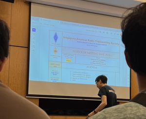
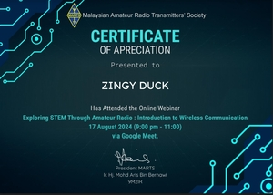

When not studying or at school, I mostly spend my time on my computer playing video games or drawing whatever comes to mind.
These hobbies are a big part of my life, providing a creative outlet and a way to unwind.
I'm also a licensed ham radio operator, which lets me connect with people worldwide, explore new technologies, and learn about communication hands-only.
Through radio, I’ve met interesting people and found a sense of community that has fueled my curiosity and love for learning.
In the future, I dream of traveling the world and becoming an artist or a software engineer.
Driven by curiosity and a big imagination, I am excited about all the possibilities ahead.
With a love for learning, I know that with hard work and passion, anything is possible.

(SARTS)
Singapore Amateur Radio Transmitting Society

(MARTS)
Malaysian Amateur Radio Transmitters' Society